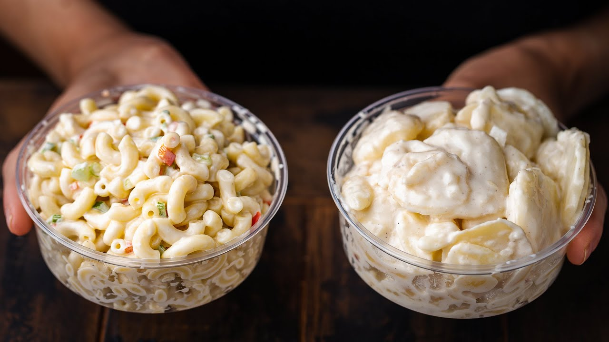

The other half of the New York deli case, from Sip and Feast. Thin-sliced waxy potatoes take an overnight bath in a sweet-sour onion brine — the brine is the flavor; the mayo is just the finish.
Whisk the vinegar, water, sugar, oil, grated onion, salt, and white pepper in a bowl until the sugar dissolves. Set the brine aside.
Boil the potatoes whole in salted water until just shy of fork-tender — they'll finish softening in the brine. Drain and cool under cold running water.
Peel and slice the potatoes into ⅛-inch pieces — a mandoline earns its keep here. Thin slices mean more surface for the brine.
Spread the slices in a flat baking dish and pour the brine over. Cover and refrigerate overnight — two days is even better — stirring gently once halfway through.
Drain off the excess brine, then fold in the mayonnaise until creamy, adding more if needed. Taste and adjust the seasoning.
Shredded carrot and parsley over the top. Serve cold; keeps up to 5 days.